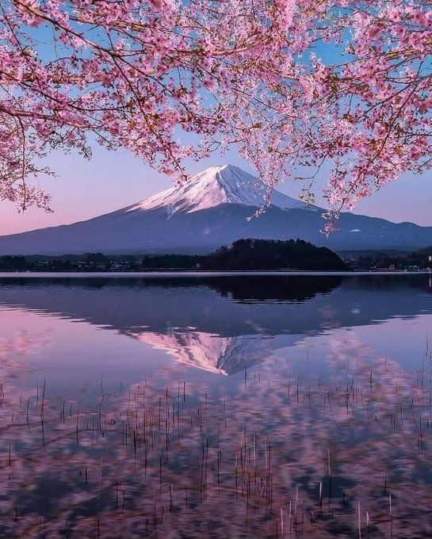
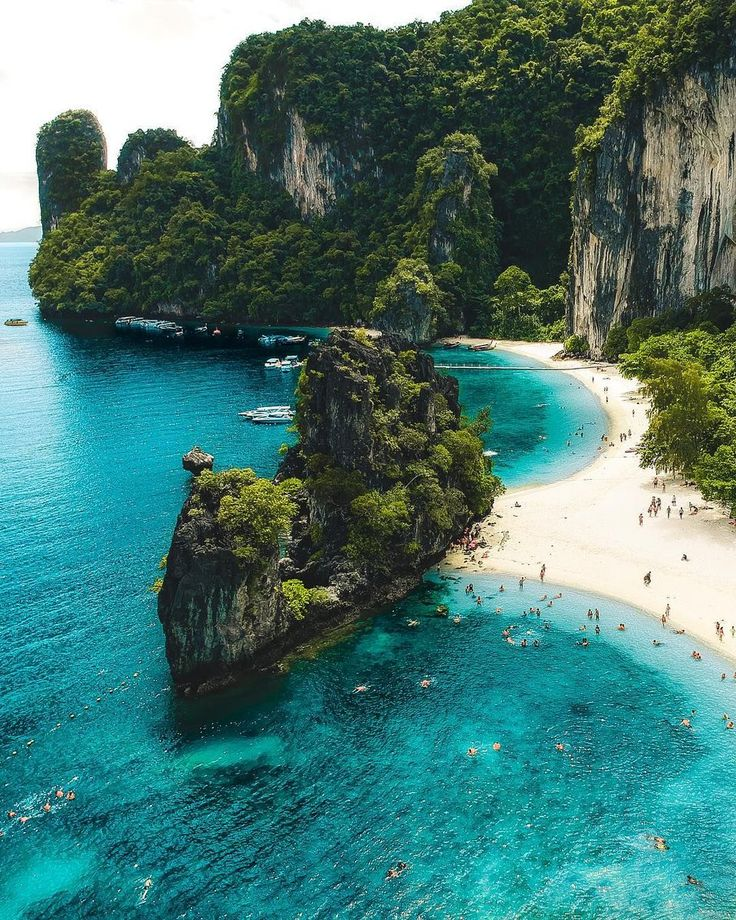
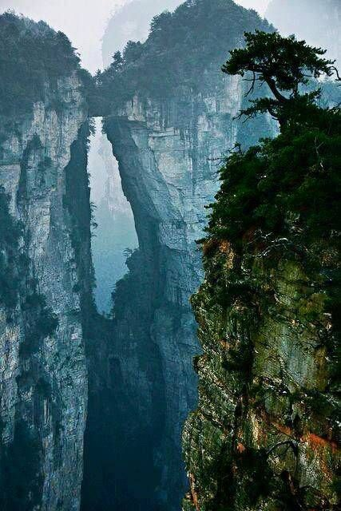

Welcome to Asia
The Mount Fuji: a cultural icon and geographical wonder With a height of 3776m it is the highest place in Japan It is popular for its hiking, camping and above all the beautiful views that it has Millions of tourists usually visit this mon. and what are you waiting for?

Welcome to Asia
Tailand: A cultural country, with a tropical climate islands in which green and blue colors predominate and an extensive fauna, highlighting the giant gray "The Asian Elephant". Get to know the islands "similar to" a marine park or a visited site for diving lovers "Koh Tao", "Krabi" a coastal province full of reefs marine life and bright turquoise waters

Welcome to Asia
The China Mountains: Whether icy peaks, gray or green The vast geography of China has hundreds of mountains, we can talk about "Emei" a mountain that rises to the clouds "Huashan" To get there you take a cable car. Thus obtaining a unique view
